Modelica Newsletter 2015-1
Newsletter #1 of 2015 (News from Modelica Association, from Modelica related projects and from Modelica tool vendors)
Table of Contents
- Letter from the Board
- Modelica Association News
- 11th International Modelica Conference, Versailles, September 21-23, 2015
- FMI User Meeting at the Modelica Conference 2015
- Hansjürg Wiesmann 1940 - 2015
- Educational News
- Modelica Book in Chinese
- Introductory Modelica Book in Japanese
- Introductory Modelica Book in Spanish
- Introductory Modelica Book in Chinese
- Systems Engineering Course with Modelica and OpenModelica
- Dymola and Modelica Training Courses from Claytex
- Certified Dymola, Modelica and FMI Courses for Professionals
- Training Courses for Modelica and TIL
- Training Courses for Modelica and Dymola
- Call for Presentations OpenModelica/MODPROD Workshops Feb. 2016
- EOOLT'2016
- North America Modelica Users' Group Conference 2015
- ITI Symposium 2015
- Library News
- New Fuel System Library
- New Environmental Control Library
- New version of the Wolfram ModelPlug library
- Wolfram OPC Classic Library Released
- HumanComfort Library 2.0 - Now also with CFD package
- ClaRa Library 1.0 - Perfect power station operation
- Hydraulics Library 4.3 - ThermoHydraulic capabilities
- Heat Exchanger Library 1.4 - Plate heat exchangers and condensers with receivers
- Pneumatics Library 1.8 - Custom valves and pressure models
- Vehicle Dynamics Library 2.2 - Improved ground interaction
- Air Conditioning Library 1.11 - Improved numerics for zeroflow
- Modelica_DeviceDrivers Library 1.4.0 - New Features and Improved Compatibility
- HVAC Library 2.0 - Now with many air conditioning models
- Buildings Library 2.1 - adds electrical systems, demand response and FMU support
- Flight Control System Library
- Aircraft Landing Gear Library
- Modelica Library Updates
- Aircraft Hydraulic System Library
- Vendor News
- ESI-Group Releases ESI-Xplorer
- Virtual Prototyping with VPS and Modelica
- dSPACE TargetLink Supports FMI 2.0 Exports
- LMS Imagine.Lab Amesim™ 14.1; Released
- New Product from Maplesoft Offers Easy Web Deployment of MapleSim Simulations
- Maplesoft Presentations and Tutorial at the Modelica Conference
- OpenModelica 1.9.3 Release
- Wolfram SystemModeler 4.1 Released
- FMI Toolbox for MATLAB®/Simulink® version 2.1
- FMI Add-In for Excel version 1.3.5
- PyFMI 2.2
- JModelica.org 1.16b1 released
- Dymola 2016
- FMI Support in Dymola
- Dassault Systèmes acquires Modelon GmbH
- TLK DaVE - New version 1.5.0 released
- Enhanced OpenModelica Interactive Notebook
- LMS Imagine.Lab Amesim™ further extends its FMI support
- Modelon Deutschland at your service
- FMI Blockset extended to support additional tools
- 11th Modelica Conference - ITI will be front and center
- XenGen: Web-Based Deployment of FMI Models
Letter from the Board
Dear Modelica and FMI interested,
11th International Modelica Conference: This conference, about Modelica and FMI, will take place on Sept. 21-23, 2015 near Paris. More than 400 participants have already registered. For more details, see the conference newsletter article.
Modelica Success Story: In the June 2015 issue of ITEA Magazine, an article was published entitled ITEA Success Story Modelica (pages 12-15). In this article the ITEA organization reports about the successful ITEA research projects in which Modelica and FMI have been further developed and introduced in industry.
Modelica Standard Library: A maintenance release was published on July 30, 2015 (Version 3.2.1 Build 3; for details see the trac tickets).
FMI:
- The FMI project members discussed rules for how to develop and release new FMI versions. On April 2015 the FMI Steering Committee accepted and published the FMI Development Process document and templates for FCPs (= FMI Change Proposals). In the meantime several working groups have been started to work on FMI enhancements according to this process.
- All FCP contributors have to sign a CCLA (Corporate Contributor License Agreement). The CCLA text was initially proposed by IBM and is currently in a (nearly finished) negotiation phase between lawyers from several companies.
- FMI logos for different purposes have been developed by a paid contract from a French company. The FMI group has already gotten the final design of the logos (in vector and bitmap graphics) and will make them publicly available once some final contractual details are fixed.
- There are already more as 20 tools that support FMI 2.0, the newest version of the FMI standard released in 2014 (for details see the Tools page with filter "FMI_20").
- The project leader, Torsten Blochwitz (ITI), will give an overview on the status of the FMI group in the FMI User Meeting in the tutorial session of the Modelica conference.
Modelica: The project members used the FMI Development Process as a starting point and adapted it to the needs for the Modelica Language Development. On June 2015 the Modelica Specification Development Process was released together with MCP (Modelica Change Proposal) templates. The Modelica web master already introduced a new component "--MCP--" and new milestones MCP-XXX into the trac system. There are currently 18 MCP proposals in the InDevelopment phase.
SSP: (System Structure and Parameterization of Components for Virtual System Design): The SSP project started in 2014 and its members are very actively working on a new standard to describe the exchange of one or more connected FMUs with different parameter sets. The project leader, Jochen Köhler (ZF), will give a short overview on the status in the FMI User Meeting in the tutorial session of the Modelica conference.
If you have interesting news for the Modelica and FMI community, please contact the newsletter editor (Michael Tiller) for information on how to submit newsletter articles for possible inclusion in the next newsletter. The deadline for articles for the next newsletter is February 15, 2016.
Martin Otter on Sept. 4, 2015
(Chairman of the Modelica Association)
Modelica Association News
11th International Modelica Conference, Versailles, September 21-23, 2015
Welcome to the 11th International Modelica Conference which takes place at Palais des Congrès de Versailles, Versailles, France, September 21-23, 2015. The conference is organized by Dassault Systèmes and Linköping University in cooperation with Modelica Association.
The program is now available here. There will be 101 paper presentations, 7 tutorials, 15 vendor presentations and 20 exhibitors. Keynote speeches will be given by Prof. Alberto Sangiovanni-Vincentelli, UC Berkeley, USA and Dr. Albert Benveniste, INRIA, France.
Welcome to Versailles
This article is provided by Hilding Elmqvist (Dassault Systèmes AB, Lund) and Peter Fritzson (Linköping University)
FMI User Meeting at the Modelica Conference 2015
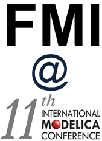
The FMI Project will organize an "FMI User Meeting" within the tutorial/workshop session on the first day of the Modelica Conference 2015 as a complement to the scientific track(s) on FMI. The intention is to increase the interaction between FMI users in different companies / institutions and the Modelica Association Project FMI.
In the first part, an overview of the FMI ecosystem will be given by the FMI Project leader. The working modus of the FMI Project and the new development process will be presented including FMI Change Proposals and supporting tools. The current status of the FMI standard and current developments will be summarized.
In the second part, FMI users will present how FMI is currently used for model interchange between different companies or different departments resp. engineering domains within one company, enabling collaborative model-based systems engineering. Users are encouraged to relate their experience with FMI to influence future developments.
For the agenda, have a look at the description of the tutorial/workshop no.5 at the conference program.
In order to attend, please register for the Modelica Conference, and select the FMI User Meeting as your tutorial/workshop for the first day (21.9.2015, 13:00-16:30 hours).
Contact: fmi-user-meeting-2015@fmi-standard.org
This article is provided by Christian Bertsch (Robert Bosch GmbH)
Hansjürg Wiesmann 1940 - 2015
Hansjürg Wiesmann, 74, of Seegräben, Switzerland, passed away on August 22, 2015, as a result of a long struggle with a serious illness. We grieve the death of our beloved friend and Modelica Association member. Hansjürg was Senior Scientist at the ABB Research Center Baden, Switzerland during his professional career. Also after his retirement he made valuable contributions to Modelica. His research topics included Theoretical Physics, Electrical Engineering, Dielectrics, and modelling of complex systems, for which he took part in the Modelica initiative since 1996. Hansjürg made many considerable contributions to the Modelica community such as the Modelica SPOT library for electric power systems which in turn is the basis of the PowerSystems and the Electric Power Systems library. He also authored and co-authored numerous scientific Modelica papers. Hansjürg was an outstanding scientist, and also a loyal and reliable person, whose calm spirit and integrity were prized within our Modelica community. His contributions to a good discussion culture at the Modelica design meetings will be missed by all of us. He is an inspiration to us and future generations of engineers.
We will miss him terribly and extend our condolences to his family.
This article is provided by Bernhard Bachmann (Bielefeld University of Applied Sciences) and Hubertus Tummescheit (Modelon) and Rüdiger Franke
Educational News
Modelica Book in Chinese

The book Modelica by Example by Dr. Michael Tiller is now available in Chinese. The book, originally conceived as a project on Kickstarter, is published under a Creative Commons license that encourages translations into other languages.
This translation was an open collaboration between Dongping Xie (chapter 2, 4-9) and Global Crown Technology (front matters, chapter 1 and 3). This translation process was facilitated by the liberal licensing of the book and the availability of the book's source on GitHub. To date, the book has benefited from 134 contributions via "pull requests" including those submitted as part of this translation.
This is the first complete translation of "Modelica by Example". We hope our efforts can serve as a model to others hoping to create translations to other languages. We have compiled the translation procedures used for others who wish to contribute.
The HTML version of the Chinese translation is hosted at http://book.xogeny.com/cn.
This article is provided by Dongping Xie and Michael Tiller (Xogeny) and Lionel Belmon (Global Crown Technology)
Introductory Modelica Book in Japanese
The introductory book “Introduction to Modeling and Simulation of Technical and Physical Systems” by Peter Fritzson has been slightly updated and translated to Japanese by Tomohide Hirono, reviewed by Akira Ohata, and published by TechShare through the efforts of Takaaki Shigemitsu.
It is aimed at teaching Modelica modeling and simulation to beginners, or in courses where there is only limited time for an introduction to Modelica.
The book provides downloadable exercises available here, and uses the Modelica language standard version 3.1.
The translated book has been published and is available at Amazon Japan.
Please visit: www.amazon.co.jp and search for 978-4906864058.
This article is provided by Peter Fritzson (Linköping University)
Introductory Modelica Book in Spanish
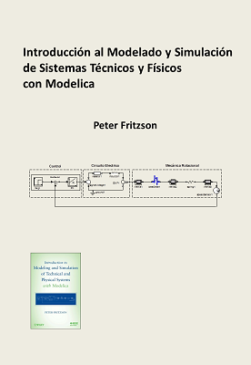
The introductory book “Introduction to Modeling and Simulation of Technical and Physical Systems” by Peter Fritzson, copyright (English version) by Wiley-IEEE Press, has been slightly updated by Peter Fritzson and translated to Spanish. The translation of a previous version of this book was done by Sebastián Dormido, Madrid, Spain. José Luis Villa at Technical University of Cartagena de Indias, Cartagena, Colombia, translated the updated parts and updated the current version, including the new appendix.
It is aimed at teaching Modelica modeling and simulation to beginners, or in courses where there is only limited time for an introduction to Modelica.
The translated book is downloadable at the end of September 2015 from here including downloadable exercises, and uses the Modelica language standard version 3.1.
This article is provided by Peter Fritzson (Linköping University)
Introductory Modelica Book in Chinese
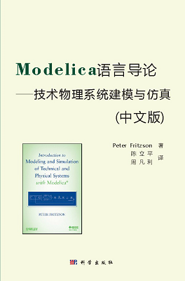
The introductory book “Introduction to Modeling and Simulation of Technical and Physical Systems” by Peter Fritzson has been translated to Chinese by Fanli Zhou and Liping Chen, and published by Science Press in China. Suzhou Tongyuan organized the translation work.
It is aimed at teaching Modelica modeling and simulation to beginners, or in courses where there is only limited time for an introduction to Modelica.
The book provides downloadable exercises available here, and uses the Modelica language standard version 3.1.
The translated book will be available in print in November 2015 from Science Press.
This article is provided by Peter Fritzson (Linköping University)
Systems Engineering Course with Modelica and OpenModelica
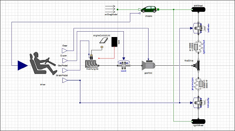
This is an introductory course in systems engineering with emphasis on model-based systems development, design, and analysis using tools. The course include general methods which are useful within a range of system engineering domains, e.g., computer science, software engineering, machine design, electrical engineering, vehicular systems, aerospace applications, transport systems, project management, sustainability life cycle design and analysis, maintenance. After the course, students should be able to:
- Describe how products and services from different technical areas can be integrated into a system.
- Describe basic concepts in Systems Engineering.
- Specify and analyze system requirements.
- Design and model a system architecture.
- Use modeling languages such as Modelica and/or SysML to describe a small system.
- Model, analyze, simulate, and optimize a system.
- Plan implementation of a system.
- Validate a system.
- Perform environmental and lifecycle design and management of a system.
Case Study with a Hybrid Electric Vehicle
The course contains a case study with the design of a plug-in charging hybrid electric vehicle. This includes system analysis, design, modeling and simulation, requirement formalization and verification, choice of components, optimization to minimize CO2 emissions, life-cycle analysis, etc.
The plug-in hybrid electric vehicle model has the schematic connection diagram shown to the right.
A model library in Modelica with model components relevant for hybrid electric cars will be made available. Tool support for modeling, simulation, requirement formalization, requirement verification, optimization, etc. will be available using OpenModelica.
Course Literature and other Information
Selected parts of these books as well as some articles
- Dickerson, Charles, and Dimitri N. Mavris. Architecture and Principles of Systems Engineering. Auerbach Publications. 2010.
- Peter Fritzson. Principles of Object-Oriented Modeling and Simulation with Modelica 3.3. Wiley-IEEE Press, 2015.
Where: Linköping University, Linköping, Sweden
When: October 19 - October 30, 2015
More info and detailed schedule: here.
Teachers: Peter Fritzson, Kristian Sandahl, Ola Leifler, Lars Eriksson, Lena Buffoni, Tomohiko Sakao, Petter Krus, Bernhard Thiele, Erik Herzog
If you are interested to attend the course, send an email with your contact details and affiliation to: anne.moe@liu.se with cc to: peter.fritzson@liu.se. A limited number of places are available.
This article is provided by Peter Fritzson (Linköping University)
Dymola and Modelica Training Courses from Claytex

Claytex can provide training for complete novices or experienced users. We’ll help you get more from your use of Dymola and Modelica – whether that means doing more or doing more in a shorter timescale. Claytex can offer a wide range of Dymola training and Modelica training courses including the standard courses described below. If you have specific requirements, we’re happy to create a bespoke training programme for you and your engineers.
As a Dassault Systèmes Certified Education Partner, we are uniquely positioned to help develop expertise on the latest Systems Engineering Solutions by providing certified instructor led classroom training.
The next scheduled public course for Dymola and Modelica will be held at our offices in Leamington Spa on the 6-8 October. To get more information and register your interest in any of these courses or to discuss scheduling a bespoke training course to meet your own needs or organisations requirements please contact sales@claytex.com.
This article is provided by Mike Dempsey (Claytex Services Limited)
Certified Dymola, Modelica and FMI Courses for Professionals

Modelon offers certified Dymola and Modelica training for both new and experienced professional users in industry and academia. We have scheduled courses in Europe, USA and Japan, and give courses world-wide and on-site on demand. Join our professional courses on Modelica, FMI and physical modeling.
- September 7-11, 2015, Tokyo, Japan: Dymola Introduction Course
- September 21-25, 2015, Gothenburg, Sweden: Dymola Introduction Course
- October 14, 2015, Lund, Sweden: FMI Introduction Course
- October 20-21, 2015, Lund, Sweden, Hydraulics Library Course
- October 21, 2015, Gothenburg , Sweden: FMI Introduction Course
- October 26-30, 2015, Munich, Germany: Dymola Introduction Course
- November 2-6, 2015, Ann Arbor, USA: Dymola Introduction Course
- November 23-27, 2015, Tokyo, Japan: Dymola Introduction Course
- November 23-27, 2015, Lund, Sweden: Dymola Introduction Course
- November 27, 2015, Lund, Sweden: Thermo-Fluid Modeling Course
- November 27, 2015, Lund, Sweden: Mechanics Modeling Course
See our schedule for additional events. See our full catalog for a listing of all available courses, also for libraries and specific industry domains and applications. Please contact us for further information or register here.
This article is provided by Erik Åberg (Modelon)
Training Courses for Modelica and TIL
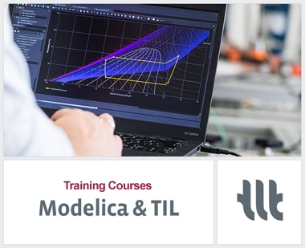
TLK-Thermo offers two day Modelica training courses for learning basic and advanced object oriented modeling. The Modelica course is an introduction to the most important features of Modelica, including numerical aspects. With many practical exercises the participants will learn how to design and implement Modelica libraries (not only within thermal science).
Furthermore, we are offering a one day course for thermal system modeling with the Modelica library TIL. The training course is directed towards simulation and modeling specialists with basic knowledge of the Modelica programming language. It can be seen as an advanced course to the basic Modelica training.
Upcoming courses:
- Modelica training: September 29th - 30th, 2015
- Introduction to TIL: October 1st, 2015
For further Information see www.tlk-thermo.com
This article is provided by Matthias Kwak (TLK-Thermo GmbH)
Training Courses for Modelica and Dymola

LTX Simulation GmbH offers the following 2-day training classes for Dymola and Modelica in German language at our office in Munich:
- Modeling and simulation with Modelica and Dymola (by Martin Otter, Chairman of the Modelica Association) on October 26-27, 2015.
- Introduction to Dymola and Modelica on November 23-24, 2015.
These training courses have been sucessfully delivered by BAUSCH-GALL GmbH for many years. The offering has now been transferred to our new company LTX Simulation GmbH.
For more information, please contact kurse@ltx.de. We also offer in-house classes in German or English. If you are interested in special topics for your training, please contact us or come visit our booth at the upcoming Modelica Conference!
This article is provided by Leo Gall (LTX Simulation GmbH)
Call for Presentations OpenModelica/MODPROD Workshops Feb. 2016
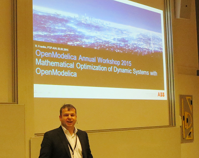
Location: Linköping University, Sweden
- 10th MODPROD Workshop on Model-Based Product Development, Feb 2-3, 2016
- 8th OpenModelica Annual Workshop, Feb 1, 2016
Theme for this year: Open Source and Open Source Business Models
Half-day tutorials are given on several topics, e.g. including: Introduction to Modelica and OpenModelica, FMI and co-simulation, Dynamic optimization, etc.
The workshops are concerned with, but not limited to, the following themes:
MODPROD workshop
Cyber-physical system modeling. Integrated hardware-software modeling. Hardware modeling. Software modeling. Co-modeling, Co-simulation, FMI Multi-body systems. Multi-domain/Multi-physics, e.g. electrical-hydraulic. Modelica-UML-SysML. Modeling and simulation tools. CAD modeling. Design optimization and analysis. Hardware in the loop simulation. Real-time and embedded system modeling. Electrical/hydraulics modeling.
OpenModelica Annual Workshop
Applications of OpenModelica. Modelica Libraries with OpenModelica. Industrial Use Cases. OpenModelica in Teaching. FMI and interoperability. OpenModelica tool developments. Solver issues in OpenModelica. Meta modeling and hardware/software modeling. Code generation in Openmodelica. Parallel compilation and execution. Model-based optimization.
Submission
Researchers and practitioners are invited to submit draft presentations, small or large abstracts, or full paper drafts for consideration by the organizing committee. Publication at this event does not prevent future publication at scientific conferences. The submission can be new or recently published work. The submission should be a .pdf file to be uploaded via Easychair (www.easychair.org) to OpenModelica 2016 or MODPROD 2016.
Important Dates
Submission deadline: November 15, 2014
Acceptance notification: November 20, 2014
For more information, see www.openmodelica.org and www.modprod.liu.se.
This article is provided by Peter Fritzson (Linköping University)
EOOLT'2016
The 7th International Workshop on Equation-Based Object-Oriented Modeling Languages and Tools will take place in Milano, Italy within Spring 2016. Details, important dates and CfP will be published soon on the EOOLT website . For further information, simply ask
- Francesco Casella, General Chair, francesco.casellapolimi.it
- Dirk Zimmer, Program Chair, dirk.zimmerdlr.de
SCOPE:
The EOOLT workshop is the opportunity to present and discuss the ongoing development of equation-based, object-oriented languages and their corresponding tools. This refers to languages like Modelica but also includes other technologies such as SysML, VHDL-AMS, Simulink/ Simscape, COMSOL, etc.
Contributions focus on methodological aspects and describe new solutions for the design and use of equation-based languages. In addition to full contributions also shorter work-in-progress paper are welcome and offer an opportunity to discuss current approaches within the community.
Typical themes of the EOOLT workshop reach from language design over modeling aspects to simulation code:
- Design aspects of equation-based languages and their formal semantics
- Relation to other languages such as functional reactive programming (FRP) or synchronous languages
- Verification, type systems, and early static checking
- Discrete-event and hybrid modeling
- Multi-resolution / multi-scale modeling using EOO languages.
- Model-driven development related to EOO languages.
- Equation-based in the frame of system engineering
- Reflection and meta-programming.
- Environments for modeling, simulation and debugging.
- Mathematical formalisms for simulation semantics
- Generation of simulation code for real-time systems, embedded system, multi-core platforms, distributed systems, etc.
- Tools for analyzing or optimizing equation-based models.
This article is provided by Dirk Zimmer (DLR-SR) and Francesco Casella (Politecnico di Milano)
North America Modelica Users' Group Conference 2015
The North America Modelica Users' Group is pleased to announce its third Users' Conference. Building on the success of last year's conference and the growing interest in the Modelica and Functional Mockup Interface (FMI) standards throughout the world, the 2015 North America Modelica Users' Conference will provide a face-to-face forum to get up to speed on the latest innovations, industrial applications and best practices for modeling and simulation. As with the previous conference, Modelica and FMI users will have the opportunity to share ideas, discuss issues specific to North American users and address modeling problems all without crossing the Atlantic!
This year's event will be held on November 11th and 12th in Storr, Connecticut and will be organized in conjunction with the International Conference on Complex Systems Engineering (ICCSE). More information about the North America Modelica Users' Group Conference event can be found on our registration page.
This article is provided by Michael Tiller (Xogeny) and Hubertus Tummescheit (Modelon)
ITI Symposium 2015
Preparations for the 18th ITI Symposium in November are well underway. During the 2 day SimulationX User Convention and the accompanying exhibition, more than 50 speakers from renowned companies including BMW, Brose, Daimler, Ford, Getrag, IAV, Johnson Electric, Knorr-Bremse, Nabtesco, Takraf, Vaillant, ZF and many more present in 15 sessions the latest developments and application examples from the digital world of system simulation. Get more information and secure your conference ticket for the 18th ITI Symposium 2015 and register at symposium.itisim.com.
This article is provided by Manuela Joseph (ITI GmbH)
Library News
New Fuel System Library
Modelon is now publically releasing the Fuel System Library for the first time. Fuel System Library is a Modelica model library targeting the design and verification of fuel systems on civil and military aircraft. It is designed to analyze and verify the system behavior during various dynamic operating modes and flight conditions. Aircraft are characterized by large variations in acceleration and orientation. The Fuel System Library provides simulation results accounting for these effects on fuel-air mixtures and includes full support of bidirectional flow.
Fuel System Library is a suitable tool for system and component development and enables an assessment of system performance and transient characteristics. It has been developed internally at Modelon since a number of years together with a European airframer. Starting with version 3.1, it is now publically available. Modelon are now able to offer a package hardened through industrial program deployment out of the box.
The models have been designed to be efficient and numerically robust and can therefore handle large-scale complex systems. Component models include ejectors, pumps, tanks, valves, and pipes.
Benefits:
- Flexible composition of user-defined system architectures for efficient model management,
- Geometric models with arbitrary gravity and acceleration for accurate predictions throughout the entire flight envelope,
- Real-time capable high performance models enabling Hardware-In-the-Loop (HIL) applications,
- Full support for bidirectional flow for coverage of all operating conditions,
- Efficient representation of air-fuel mixture properties enabling robust and fast simulation of large systems, and
- Configurable model fidelity, such as switching on or off the thermal effects, for faster simulation and right complexity
For detailed information please visit Fuel System Library or contact info@modelon.com.
This article is provided by Michael Sielemann (Modelon)
New Environmental Control Library
Modelon is pleased to announce the public release of the Environmental Control Library, a Modelica model library for aircraft environmental control systems analysis and design. The library is designed to study energy consumption and thermal conditions that affect the level of comfort for passengers and crew. These performance aspects are driven by large variations in ambient conditions such as humidity and temperature. The models provided by Environmental Control Library account for these effects through first principles and fully support bidirectional flow.
Environmental Control Library is used in system and component development and assists in the assessment of system performance and transient characteristics. Since a number of years it has been developed by Modelon together with a European airframer. It is now publically available in version 3.1 and provides value hardened through industrial program deployment.
The library provides an efficient and numerically robust framework suitable for large-scale complex systems. Component models include heat exchangers, compressors, turbines, ejectors or jet pumps, water separator, valves, cabin, and pipes.
Benefits:
- Flexible composition of user-defined system architectures for efficient model management
- Real-time capable high performance models enabling Hardware-In-the-Loop (HIL) applications
- Full support for bidirectional flow for analysis of all modes of operation on ground and in flight
- Efficient representation of moist air enabling robust and fast simulation of large-scale systems
- Online visualization of simulation results for intuitive understanding of the system behavior
- Configurable model fidelity for faster simulation and right complexity level
For detailed information please visit Environmental Control Library or contact info@modelon.com.
This article is provided by Michael Sielemann (Modelon)
New version of the Wolfram ModelPlug library
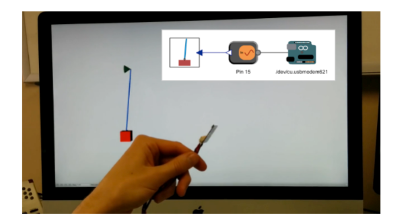
Version 1.1 of the Wolfram ModelPlug library is now available. The new version includes support for the Arduino Leonardo board. You can learn more about using the library by reading the blog post Using Arduinos as SystemModeler Components.
This article is provided by Jan Brugård (Wolfram MathCore)
Wolfram OPC Classic Library Released
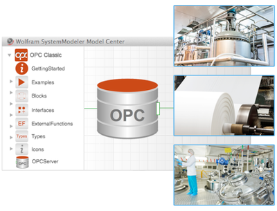
The new is now available. OPCClassic is a Modelica library that allows you to link your simulation models to the real world by connecting to OPC servers. The library acts as an OPC client, enabling you to incorporate real, live data into your simulations. Learn more about the library in the Releasing the OPCClassic Library blog.
This article is provided by Jan Brugård (Wolfram MathCore)
HumanComfort Library 2.0 - Now also with CFD package
The HumanComfort Library is a Modelica library for modelling the thermal behaviour of buildings, as well as vehicle, ship and aircraft cabins. It allows simultaneous dynamic simulation of zones and air conditioning systems, as the new HumanComfort Library 2.0 includes the addition of a CFD-based air model. Using view factors, an exact calculation of the thermal radiation between visible surfaces is supported. The new model uses the finite-volume method to subdivide the air volume, making it possible to reduce the number of required cells. The calculation is made on the basis of Navier-Stokes equations, which achieves conservation of momentum.
With simultaneous simulation of air-conditioned zones (e.g. in buildings and vehicles) and the air-conditioning system, it is possible to draw up an analysis of the interactions between the system and the comfort in the zone. The effects of, for example, brief system failures can thus be examined in a cost-saving and time-efficient way.
The new CFD package has been verfied and validated successfully against multiple measurements (e.g., aircraft and automotive cabins). It will be released in HumanComfort Library 2.0 in November 2015. Please contact info@ltx.de or your local Dymola distributor for more info.
This article is provided by Stefan Wischhusen (XRG Simulation GmbH)
ClaRa Library 1.0 - Perfect power station operation
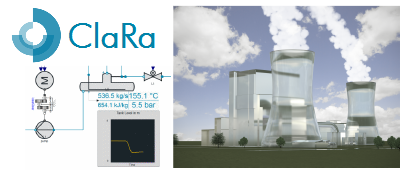
Hamburg University of Technology, TLK-Thermo GmbH and XRG Simulation GmbH proudly announce the successful release of a comprehensive Modelica library for conventional power plant simulation. The new ClaRa (Clausius Rankine) library 1.0 can be downloaded for free from www.claralib.com. The development of the software was funded by Germany's Federal Ministry of Economic Affairs and Energy on the basis of a decision by the German Bundestag.
Significant changes in world's energy markets come with new challenges for existing and new power plant projects. Conventional disposable units have to be more flexible to outbalance fluctuating energy input from the renewables. ClaRa is used for real life applications and consists of various component models with different level of detail. The library is shipped with the freely available and well elaborated TILMedia ClaRa which provides substance property data for four different media types: water/steam (table based and spline interpolated), flue gas (gas-vapor-ash mixture with eight substances), CO2 and a mixture of real fluids for application in CO2 separation processes. The library distinguishes itself by the following features:
- Various models for numerous power plant components like pumps, fans, turbines, heat exchangers, combustion chambers, electric motors, mills, valves, piping and fittings, storage tanks and flue gas cleaning
- Transparent set of equations and variable naming
- Robust and fast substance properties provided by the freely available TILMedia ClaRa
- Validation against literature data and measurement data of existing plants
- Initialization tool with basic stationary models
Please contact us for more information: info@claralib.com.
This article is provided by Stefan Wischhusen (XRG Simulation GmbH)
Hydraulics Library 4.3 - ThermoHydraulic capabilities
With the last releases of Hydraulics Library we introduce consolidated modeling capabilities in ThermoHydraulics, as well as improved documentation and tutorials.
Thermo Hydraulics
With the introduction of gas content ThermoHydraulics performance is now numerically more robust.
You will find that parameterizing using tables is now faster, since tables can be inserted directly in the media definition. It is easy to see the influence of thermodynamic effects since they can be switched off directly in the oil parameter-interface. This new feature also enables usage of ThermoHydraulics-fluids in isothermal applications. Compared to the previous tabular fluids, these fluids reduce simulation time with a factor of approximately five.
Read Modelon's blog article to see an interesting application example on ThermoHydraulics!
Documentation
The recent documentation improvements have been focused on enabling to find relevant information for experienced and new users. Both top level and component specific information have been reworked. The library comes with brand new tutorials for the Lines, Elements and Fluids sub-packages, assisting you with choices for your application. Additionally, you will find increased guidance for the parametrization and assumptions of components in the dialog boxes and documentation.
Specialized courses
Get a head start with the Hydraulics Library by attending our new specialized course, designed for both beginners and power users.
This article is provided by Pieter Dermont (Modelon)
Heat Exchanger Library 1.4 - Plate heat exchangers and condensers with receivers
The latest versions of Heat Exchanger Library add to the existing models for stackable flat tube heat exchangers, models for configurable plate heat exchangers and for condensers with in-built receiver.
Plate heat exchangers
All flow configurations can be captured in the plate heat exchanger model: different plate arrangements and overall relative flow direction. We have included two different plate geometries: plain and chevron, as well as corresponding heat transfer and pressure drop correlations. The modular nature of the models permits to conventiently add new geometries and correlations.
Condenser with receiver
The condenser with in-built receiver contains all functionalities of the flat tube heat exchangers – you can use it in stacks, with inhomogeneous flows and specify geometry specific correlations. You can configure it in various ways:
- Place the receiver after any pass
- Initialize with enthalpy or predefined liquid level
- Add dessicant to the receiver
For more information check out this blog article!
This article is provided by Pieter Dermont (Modelon)
Pneumatics Library 1.8 - Custom valves and pressure models
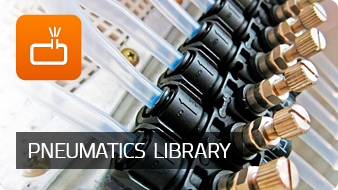
The last release comes with a new sub-package, Pneumatics.Elements, an extended set of geometry based pressure drop models and a greater level of user convenience.
Pneumatics Elements
Based on technology from the sister product Hydraulics library, the library comes now with a new set of building blocks to customize valves. Using these building blocks, you can build upon one of the many existing valve models to design a valve that fits exactly your needs in terms of simulation performance and assumptions. Possibilities include: modeling the spool mass, varying flow area or volume of the chambers, and enabling leakage.
Pressure drop models
A comprehensive set of geometry based pressure drop models for minor and major pneumatic losses is now included. Pipes, different cross section based channels, and a wide choice of edges and curves are available.
Improved user-friendliness
Beginners and power-users alike will find their needs more rapidly thanks to:
- Greatly improved dialog boxes
- Better interfaces and templates
- Fewer cylinder models but more customization options
- Connectors which show whether your component contains a volume
The application focus of the Pneumatics Library is on low pressure actuation systems in a variety of industries, including brakes and demolishion tools.
This article is provided by Pieter Dermont (Modelon)
Vehicle Dynamics Library 2.2 - Improved ground interaction

Recent developments in Vehicle Dynamics Library have been focused on improved ground interaction.
OpenCRG® ground
The OpenCRG® project provides open file formats and open source tools for the detailed description and evaluation of 3D road surfaces. OpenCRG® data sets are designed to describe very detailed patches of road surfaces making them suitable for a broad range of applications including e.g. tire and driving simulations. The OpenCRG® ground model supports both binary and textual OpenCRG® data files.
Cornering ground
This ground model allows modification of the ground surface position, orientation and curvature based on input signals. This ground model can be used in quasi-steady state simulations to evaluate chassis states at a particular straight line or cornering condition. The chassis velocity and curvature result in lateral, longitudinal and vertical accelerations being applied to the vehicle. This ground model is particularly useful in motorsports applications to evaluate chassis states at different points on the race track.
New strut components
New strut components with bushings have been introduced. These struts are mounted to the chassis and suspension with a bushing. The bushing components are replaceable, and one model has two sets of translational flanges where one can be parameterized to attach either inside or outside the mount bushings. This is useful when springs and dampers are co-located in the suspension but attached on different sides of the mount bushings.
Planar contact
A planar contact calculation filtering method has been added to the Generic contact calculation block. The planar filtering method calculates a center frame and contact frame based on a plane on the ground surface.
Vehicle Dynamics Library provides architecture and contents for full vehicle dynamics. Applications cover optimization, offline simulation, driver simulators, and hardware-in-the-loop (HIL).
This article is provided by Pieter Dermont (Modelon)
Air Conditioning Library 1.11 - Improved numerics for zeroflow
The Air Conditioning Library is Modelon's long-standing thermofluid modeling library. Its improvements for the last releases are concentrated along two axes : improved numerics for zero flow behaviour and user convenience.
The newly added system component reassembles the controls to adjust your model for simulations with little or no mass flow. All settings are automatically propagated to your thermofluid components. In addition, the library's connectors have been upgraded to stream connectors, resulting in increased zero-flow performance. Settings include:
- various differentiating schemes,
- state selection,
- event generation,
- and the possibility to shut-off pressure loss models.
The library's reviewed and extended documentation is intended for new users as well as power users. New users will be able to rapidly familiarize with the library. Power users are given an insight in modelling techniques.
This article is provided by Pieter Dermont (Modelon)
Modelica_DeviceDrivers Library 1.4.0 - New Features and Improved Compatibility

The Modelica_DeviceDrivers library is a free library for accessing hardware devices from Modelica models. There is support for joysticks, keyboards, UDP, TCP/IP, shared memory, AD/DA converters, serial port and other devices.
Version 1.4.0 of the library is now available at https://github.com/modelica/Modelica_DeviceDrivers/releases. The latest version brings following improvements:
- External trigger signal input for communication blocks.
- Configurable byte ordering for communication blocks.
- TCP/IP communication (currently Windows only).
- Support for up to 32 joystick buttons.
- Many more small fixes, particularly for improved Modelica and tool compatibility.
This article is provided by Bernhard Thiele (Linköping University) and Thomas Beutlich (ITI GmbH)
HVAC Library 2.0 - Now with many air conditioning models
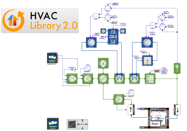
The new HVAC Library 2.0 with its unique performance oriented concept provides the opportunity to realize whole year simulations of complex HVAC systems in a very short computation time.
In the upcoming release many air conditioning components are added in order to model HVAC applications in large buildings for instance. Those models can be connected to HumanComfort building and room models (see figure).
The new features of the HVAC Library 2.0 are:
- Air conditioning components like heat exchangers, air ducts, fans, humidifiers, water extractors, etc.
- Vertical borehole heat exchanger model
- Automatic energy balance summary is extended by information about carbon dioxide emissions and energy costs
- Complete new model icons for better looking system diagrams
- The library is also available in a bundle with HumanComfort for modelling air conditioned spaces
The library will be released in Nov. 2015. Please contact us for more information about the library: info@ltx.de.
This article is provided by Stefan Wischhusen (XRG Simulation GmbH)
Buildings Library 2.1 - adds electrical systems, demand response and FMU support
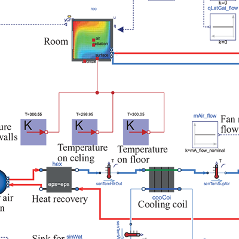
LBNL released version 2.1 of the Modelica Buildings library, a free open-source library with dynamic simulation models for building energy and control systems. The library contains more than 600 models, blocks and functions for
- air-based HVAC systems,
- chilled water plants,
- water-based heating systems,
- controls,
- heat transfer among rooms and the outside,
- multizone airflow, including natural ventilation and contaminant transport,
- single-zone computational fluid dynamics coupled to heat transfer and HVAC systems,
- data-driven load prediction for demand response applications, and
- electrical DC and AC systems with two- or three-phases that can be balanced and unbalanced.
The Buildings library is based on the Annex 60 library, a free open-source library with basic models that codify best practices for the implementation of models for building and community energy and control systems. The Annex 60 library is developed within the Annex 60 project of the International Energy Agency's Energy in Buildings and Communities Programme.
The recent major additions to the Buildings library are
- The model Buildings.Rooms.CFD that embeds a CFD model inside a thermal zone. The CFD model is an implementation of the Fast Fluid Dynamics code that allows three-dimensional CFD inside a thermal zone, coupled to building heat transfer, HVAC components and feedback control loops.
- The package Buildings.Electrical which allows simulation of buildings to electrical grid integration. It includes models for loads, transformers, cables, batteries, PVs and wind turbines. Models exist for DC and AC systems with two- or three-phases that can be balanced and unbalanced. The models compute voltage, current, active and reactive power using the quasi-stationary assumption or the dynamic phasorial representation.
- The package Buildings.Controls.Predictors which contains a data-driven model that predicts the electrical load of a building for demand response applications.
- The package Buildings.Fluid.FMI which contains blocks that serve as containers for exporting thermofluid models as a Functional Mockup Unit (FMU), which then can be imported into various other simulation programs.
For download and further literature, visit http://simulationresearch.lbl.gov/modelica.
This article is provided by Michael Wetter (Lawrence Berkeley National Laboratory)
Flight Control System Library
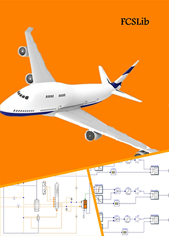
The Flight Control System Library is a model library for modeling, simulation, analysis and design of flight control actuation systems of aircrafts. This library (version 0.5) is based on Modelica Standard Library 3.2. It contains various subsystems such as Actuator Control Electronics (ACE), Power Control Units (PCU), Surfaces, and Pilot Commands. The components in the library allow a user to construct a model of flight control actuation systems that meets engineering requirements.
Features:
- The examples are provided to show typical flight control actuation systems, such as Elevator Actuation System, Aileron Actuation System, Rudder Actuation System etc.
- The library is organized as a hierarchy structure based on the physical topology of flight control actuation systems and can be used in modeling of different kinds civil airplanes.
- The interfaces between the flight control actuation system and other aircraft systems are supported, such as Flight Control Module (FCM), Aerodynamic, etc.
This article is provided by Fanli Zhou (Suzhou Tongyuan Software & Control Technology Co., Ltd.)
Aircraft Landing Gear Library
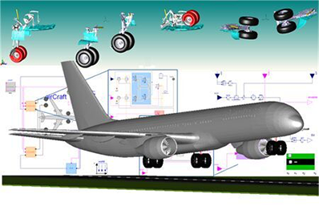
The Aircraft Landing Gear Library (version 0.5) is a model library for modeling and simulation of aircraft landing gears, including extension and retraction, brake and nose wheel steering sub-systems. The library integrates mechanical, hydraulic and control components. It also contains "elements" that allow a user to combine customized components, such as valves, airframe, wheels, etc.
Features:
- The examples are provided for landing gear sub-systems, including extension, auto brake and steering freely systems, etc.
- The library includes a 6-DOF aircraft model and multibody dynamics models of landing gears.
- The library is decomposed into hierarchy mechanical, hydraulic and control components to support the modeling of different levels of aircraft landing gear systems.
This article is provided by Fanli Zhou (Suzhou Tongyuan Software & Control Technology Co., Ltd.)
Modelica Library Updates
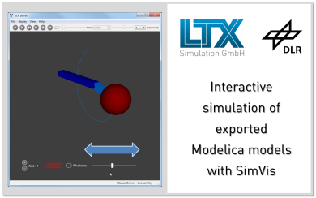
The distribution of Modelica Libraries has been initiated by BAUSCH-GALL GmbH in 2009. LTX continues this business in tight cooperation with library developers. News about our range of libraries:
- EDrives Library - New library from Anton Haumer and Christian Kral for modular engineering of electric drives. An early-access version is available for evaluation.
- HVAC Library - New Libary from XRG Simulation for modeling heating and cooling systems in buildings (see also separate article in this newsletter).
- Hydronics Library - Version 2.1 adds a storage tank with internal coil heat exchanger, more and improved heat exchanger models and a ready-to-use temperature control valve.
- Visualization Library - The upcoming version 1.4 will support Oculus Rift DK2. The visualization tool SimVis is now available separately. Therefore, model developers can provide interactive simulations including 3D-animation. End-users do not require a Modelica tool.
- AlternativeVehicles Library and Belts Library have been updated for Modelica Standard Library 3.2.1 and Dymola 2016.
LTX Simulation GmbH provides support in the selection, development and optimization of solutions for system simulations based on Modelica, FMI and Dymola. LTX gives a wide support, develops custom-made solutions and provides training courses. Furthermore, LTX distributes model libraries and software from XRG Simulation GmbH, TLK-Thermo GmbH and other developers. The close and extensive collaboration of the three companies (LTX, TLK and XRG) ensures the optimum support for its customers.
For information on our range of libraries, please have a look at our Modelica Libraries Catalog. For evaluation licenses and price info, please contact info@ltx.de or come visit our booth at the upcoming Modelica Conference!
This article is provided by Leo Gall (LTX Simulation GmbH)
Aircraft Hydraulic System Library
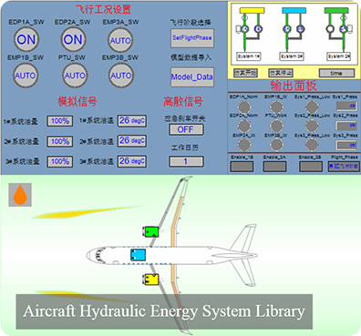
The aircraft hydraulic system library is a model library for modeling, simulation, analysis and control design of aircraft hydraulic systems. The version 0.5 is now available. The libray contains common components such as valves, cylinders, Engine-Driven-Pumps(EDP), Electrical-Motor-Pumps(EMP), accumulators, Energy Transfer Unit(ETU), and control modules for EDPs and EMPs. The Integrated Management Controller(IMC) can be connected in hierarchical layouts based on this library, and some general aircraft hydraulic systems are easy to construct based on these components.
Features:
- Supporting hierarchical modeling of large-scale aircraft hydraulic systems with integrated management controllers.
- Providing general standard aircraft fluid oil such as YH-3B and YH-10, and user-defined media is also supported.
- Containing analog and discrete dynamic animation components which used to model visual controls and display panels, and the states of hydraulic systems can be visualized when simulation.
- Including examples to demonstrate the use of the library. For example, a system contains integrated management controller, hydraulic energy systems and hydraulic loads is designed.
This article is provided by Fanli Zhou (Suzhou Tongyuan Software & Control Technology Co., Ltd.)
Vendor News
ESI-Group Releases ESI-Xplorer
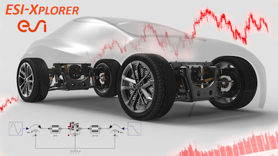
ESI-Group is a pioneer and world-leading provider in Virtual Prototyping that takes into account the physics of materials. ESI boasts a unique know-how in Virtual Product Engineering, based on an integrated suite of coherent, industry-oriented applications. Based on Computational Fluid Dynamics (CFD), Fined Element Analysis (FEA) and Virtual Reality (VR) technologies, ESI has developed an extensive suite of integrated, industry-oriented applications: to realistically simulate a product’s behavior during testing; to fine-tune manufacturing processes in accordance with desired product performance; and to evaluate the environment’s impact on performance. ESI’s solutions fit into a single collaborative and open environment for End-to-End Virtual Prototyping thus reducing, even eliminating, the need for physical prototypes during product development.
A new Modelica-based system modeling software product line called ESI-Xplorer has been released. The emphasis of ESI-Xplorer is on integration with the some of the ESI Virtual Prototyping solutions using Computational Fluid Dynamics (CFD) and/or Finite Element Analysis (FEA); and also integration with ESI Virtual Reality solutions. ESI-Xplorer utilises ESI’s collaborative platform Visual-Environment to give the engineer a single platform for modelling and analysis.
The press release of the announcement can be viewed here: ESI launches ESI-Xplorer, Systems Modeling Solution Integrated into its Visual-Environment platform
This article is provided by Peter Harman
Virtual Prototyping with VPS and Modelica
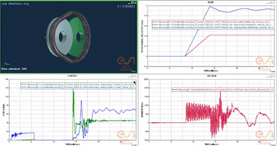
VPS (Virtual Performance Solution) is ESI-Group's solution for Virtual Product Engineering, which has its origins in PAM-CRASH, and takes into account multiple domains. Applications of VPS include crash and safety for automotive and other industries; powertrain dynamics; NVH and comfort.
Co-simulation between the finite element method solvers of VPS and Modelica forms part of the new ESI-Xplorer product line, enabling high-fidelity Virtual Prototyping of systems combining 3D mechanical subsystems with electrical, hydraulics, controls and other domains supported by Modelica. ESI-Group solutions utilise a shared Visual platform for model assembly and post-processing, which enables convenient assembly of the combined model and analysis of the simulation results.
A specific use-case of this solution is a VPS model of the mechanical variator in a Continuously Variable Transmission (CVT), co-simulating with a Modelica model of the control system and hydraulic system. The CVT variator comprises a push-belt, made up of separate plates; and primary and secondary cone pulleys. The VPS model captures the interaction between these mechanical elements including the complex friction between the belt and pulleys. Each pulley is actuated by a hydraulic piston, the pressure of which is controlled to achieve the desired ratio. The Modelica model captures the dynamics of the hydraulic and control system. During execution of the co-simulation the interactions between the mechanical, hydraulic and control elements are simulated. The effects of design parameters and control algorithms on the overall system dynamics can be studied and optimized.
This solution and case study will be presented in detail at the NAFEMS Coupled MBS-FE Applications conference in Turin, Italy, 20th-21st October 2015.
This article is provided by Peter Harman
dSPACE TargetLink Supports FMI 2.0 Exports
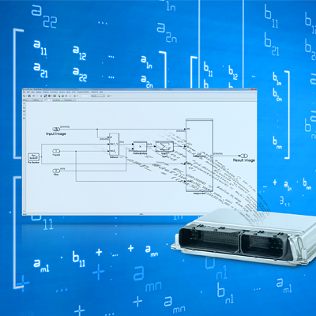
The new version of the dSPACE production code generator, TargetLink® 4.1, now has a key enhancement – it supports the FMI standard. This standard is used as the basis for taking production software code generated by TargetLink and exporting it as Functional Mock-up Units (FMUs). Based on MATLAB®/Simulink®/Stateflow, TargetLink translates models into ANSI C code integrated directly in the electronic control units. TargetLink supports the generation of both conventional and AUTOSAR-compliant code.
With TargetLink 4.1, FMUs based on the FMI 2.0 for Co-Simulation standard can now be exported directly from Simulink/TargetLink models. These FMUs encapsulate the TargetLink-generated production code and can therefore be integrated and simulated in all environments that suitably support the FMI standard. This can be done for real-time and non-real-time simulation platforms. As a result, software developers can create production code software in a familiar development environment and then import and reuse it in different environments without any manual effort.
Please visit the dSPACE FMI website for more information about the dSPACE FMI support and the dSPACE TargetLink website for more information about TargetLink.
This article is provided by Andreas Pillekeit (dSPACE GmbH)
LMS Imagine.Lab Amesim™ 14.1; Released
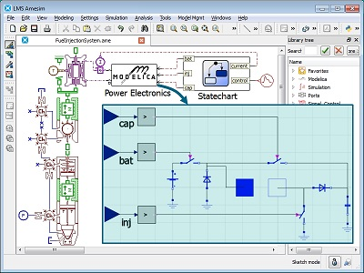
LMS Imagine.Lab Amesim 14.1 from Siemens PLM Software was released in July 2015. The latest version of LMS Amesim includes a number of usability and graphical improvements to the Modelica Editor, making it easier than ever to create Modelica models. The Modelica Import Assistant has also been enhanced, allowing users to easily set compiler options or customize the interface when coupling Modelica models to native LMS Amesim library components. Furthermore, dozens of advancements in the Modelica compiler have improved support for language features such as replaceability, discrete event handling, external objects and code generation annotations. Finally, improvements in the compiler's symbolic manipulation and state reduction algorithms mean even faster simulation times.
The Siemens PLM team is looking forward to discussing our products at the upcoming Modelica Conference in Versailles, France. We will be presenting the LMS Amesim Modelica platform and FMI tools during the vendor sessions. Participants will see the latest features available in LMS Imagine.Lab Amesim 14.1, as well as get an advanced preview of developments underway for LMS Imagine.Lab Amesim 15.
For more information about the LMS Amesim Modelica platform, please visit the Siemens PLM Software website.
This article is provided by Michael Sasena (Siemens PLM Software)
New Product from Maplesoft Offers Easy Web Deployment of MapleSim Simulations
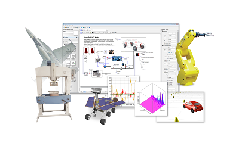
Maplesoft™ recently announced the release of MapleSim™ 2015 and the latest member of the MapleSim family of products, MapleSim Server. MapleSim is an advanced system-level modeling and simulation platform from Maplesoft, and the MapleSim Server is a new product that allows engineers to explore MapleSim simulation models from a web browser.
MapleSim offers a modern approach to physical modeling and simulation, dramatically reducing model development and analysis time while producing fast, high-fidelity simulations. MapleSim supports the creation of easy-to-use interactive applications that allow engineers to access, analyze, and explore simulation models. With the MapleSim Server, these applications can then be shared with other engineers in the organization, even if they do not have MapleSim. Using only a standard web browser, engineers can perform a wide variety of tasks, including changing parameters, manipulating model equations, running new simulations, and viewing updated results. By using the MapleSim Server, organizations can easily make these solutions available to more people while fully controlling access and eliminating version control problems.
“Solution deployment is a critical piece of the engineering process in any organization, and one that frequently causes logistical headaches unrelated to the actual solution of the engineering problem,” says Paul Goossens, Vice President of Application Engineering at Maplesoft. “The MapleSim Server saves organizations both time and money by providing a mechanism that allows the organization to take the engineering solution developed in MapleSim and deploy it directly to other engineers over the web. This makes the solution available quickly, and avoids the complications that come from having to convert a solution to another tool, pass around individual files which get out of date, or buy additional software for every single engineer who might need it.”
The MapleSim Server is part of the MapleSim 2015 family of products. MapleSim itself has also been enhanced to include powerful new tools that help engineers manage large models efficiently. Engineers can now search their model to determine which components reference a particular parameter, find all occurrences of a particular component or component type, and see exactly where a lookup table is used in a model. MapleSim 2015 also generates help pages automatically from custom components in a shared library, simplifies the updating of common properties shared by multiple components, and supports Modelica Standard Library 3.2.1, the latest official release of this international standard.
This article is provided by Tina George (Maplesoft)
Maplesoft Presentations and Tutorial at the Modelica Conference
Maplesoft is delighted to be a silver sponsor of the Modelica conference in Paris. Maplesoft’s Dr. Chad Schmitke will be presenting two papers at the conference: Developing Mathematical Models of Batteries in Modelica for Energy Storage Applications and Holistic Virtual Testing and Analysis of a Concept Hybrid Electric Vehicle Model. Also, Dr. Schmitke will be hosting a tutorial: Working with Maple 2015. Both of these will take place on Monday September 21st.
Visitors to the Maplesoft booth will get a chance to see the latest improvements in MapleSim. MapleSim 2015 includes powerful new tools for managing large models more efficiently, as well as updated Modelica support, new and updated components, more connectivity with Maple, and a variety of interface enhancements requested by customers.
MapleSim, the advanced system-level modeling and simulation tool from Maplesoft, is a Modelica-based tool that applies modern techniques to dramatically reduce development time, provide greater insight into system behaviour, and produce fast, high-fidelity simulations. The combination of the Modelica modeling language with the symbolic computation power of MapleSim enables a level of understanding, power, and extensibility that is not possible with “black-box” tools.
Please come visit Maplesoft at booth #8 in the Moliere Room during the event!
This article is provided by Tina George (Maplesoft)
OpenModelica 1.9.3 Release
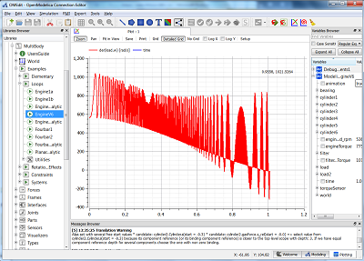
OpenModelica is an open-source model-based cyber-physical mathematical modeling, architectural description and simulation environment intended for industrial and academic usage. Its long-term development is supported by a non-profit organization – the Open Source Modelica Consortium (OSMC), www.openmodelica.org, with many company, institute, and university members.
The main highlights for this release:
- Enhanced collaborative development and testing of OpenModelica by moving to the GIT-hub framework for versioning and parallel development.
- More accessible and up-to-date automatically generated documentation provided in both html and pdf.
- Further improved simulation speed and coverage of several libraries, e.g., by faster generated code for functions involving arrays giving a factor of two speedup for many power plant models.
- A number of compiler improvements including: Code generation to enable vectorization of for-loops. Cross-compilation for the ARMhf architecture. A prototype state machine implementation.
- A number of run-time and solver improvements including: Better initialization. An implicit inline Euler solver with adaptive step size control available. Improved non-linear, linear, and mixed system solving. Improved performance and stability of the C++ run-time option.
- Several improvements of the Dynamic Optimization module with collocation (described here): Better performance due to smart treatment of algebraic loops for optimization. Improved formulation of optimization problems with an annotation approach which also allows graphical problem formulation. Support for formulating final constraints.
- GUI and plotting improvements (described here): Support for uses annotations. Support for declaring components as vectors. Faster messages browser with clickable error messages. Support for managing the stacking order of graphical shapes. Several improvements to the plot tool and text editor in OMEdit. OMNotebook improvements.
The development work is organized by the Open Source Modelica Consortium, currently 46 organizations.
For more information, see www.openmodelica.org.
Welcome to learn more about Modelica and OpenModelica in our introductory tutorial at Modelica2015, visit our vendor session and exhibition.
This article is provided by Peter Fritzson (Linköping University)
Wolfram SystemModeler 4.1 Released
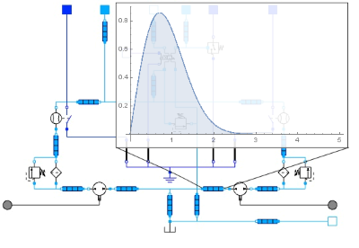
Version 4.1 of Wolfram SystemModeler is now available. Mathematica's complete suite for reliability analysis, with functionality for reliability block diagrams, fault trees, and importance measures, can now be used with SystemModeler; it is also possible to import models using FMI model exchange, and has strengthened unit support and handling.
This article is provided by Jan Brugård (Wolfram MathCore)
FMI Toolbox for MATLAB®/Simulink® version 2.1
The FMI Toolbox for MATLAB®/Simulink® 2.1 is now released! This release represents a significant step on the path to full FMI 2.0 support.
Recent releases include:
- Import of FMI 2.0 FMUs in Simulink®
- Export of Co-Simulation 2.0 FMUs from Simulink®
- Decreased load time for large FMUs
- Support for Accelerator mode for FMU blocks
- Support for inputs/outputs as buses (using structural naming) in Simulink® with FMU blocks
Look out for upcoming releases during the fall that continue towards full FMI 2.0 support, doing so with robust and reliable simulation results, and an easy-to-use user interface.
For more information and documentation, please visit the FMI Toolbox for MATLAB®/Simulink® web page.
This article is provided by Maria Henningsson (Modelon)
FMI Add-In for Excel version 1.3.5
The FMI Add-In for Microsoft Excel® 1.3.5 is now released! Recent releases focus on improved user experience:
- Install the add-in as a regular user without administrator privileges
- Improved handling of working directories and path to FMU
- Improved handling of protected sheets
For more information and documentation, please visit the FMI Add-In for Microsoft Excel® web page.
This article is provided by Maria Henningsson (Modelon)
PyFMI 2.2
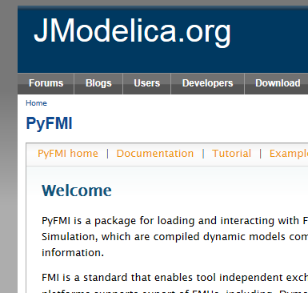
We are happy to announce the release of PyFMI 2.2! PyFMI comes with support for working with FMI 1.0 and 2.0, both Model-Exchange and Co-Simulation. With PyFMI’s companion package Assimulo, FMUs are simulated with a wide range of quality integration algorithms, including CVode from the Sundials suite, Radau and Implicit/Explicit Euler.
For this release we are glad to announce the following highlights:
- Compressed sparse calculation of the Jacobian that can substantially increase simulation performance
- Sensitivity computation with respect to model parameters (requires that model parameter is set to an input)
- Support for Python 3
For more information and documentation, see the PyFMI web page.
This article is provided by Maria Henningsson (Modelon)
JModelica.org 1.16b1 released
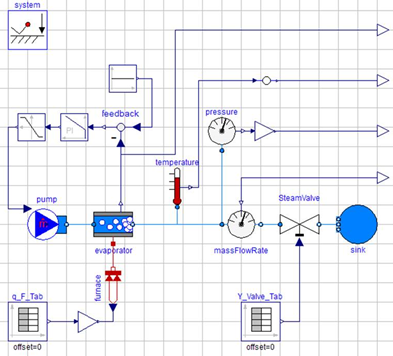
JModelica.org 1.16b1 is released! This release provides improved Modelica/MSL compliance and in several packages almost all example models simulate with a correct result. Complete compliance reports can be found on JModelica.org public Jenkins.
Also, there has been a number of improvements to the CasADi-based optimization algorithms.
Main highlights in JModelica.org 1.16b1:
- Improved simulation compliance, focusing on the following packages:
- Modelica.Mechanics.MultiBody
- Modelica.Blocks
- Modelica.Electrical.Analog
- Modelica.Electrical.Digital
- Modelica.Electrical.QuasiStationary
- Modelica.Electrical.Spice3
- Modelica.Magnetic
- Modelica.Mechanics.Rotational
- Modelica.Media
- Modelica.Thermal
- Modelica.Math
- Improved compliance, in particular support for:
- dynamic state select
- delay()
- spatialDistribution()
- Additions and improvements in the CasADi-based optimization tool-chain:
- Warm starting - descretize an optimization problem once, solve it multiple times with different parameters, inputs, and initial guesses
- Classes for Model Predictive Control and Moving Horizon Estimation
- Back tracking from discretized problem to original. Trace back residuals, dual variables, and troublesome Jacobian entries to the original model's equations and variables
- Possible to inspect equation scaling
- Checkpointing option to reduce discretization work
JModelica.org is an extensible Modelica-based open source platform for optimization, simulation and analysis of complex dynamic systems.
This article is provided by Johan Åkesson (Modelon)
Dymola 2016
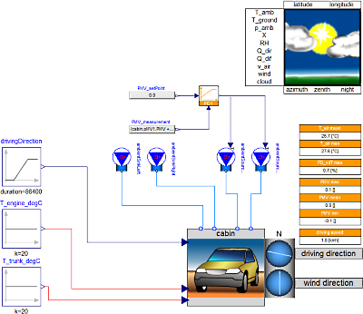
Dassault Systèmes are delighted to announce that Dymola 2016 was released on May 29, 2015.
Model development and simulation
Dymola 2016 offers significant improvements for the model developer. Extended support for editing multiple models is provided by a new tabbed interface in the graphical editor, while an instance path indicator facilitates navigation within the model. Drag & drop in the package browser makes restructuring of model libraries faster.
Plotting of simulation results has been improved with a second vertical axis. Model debugging is supported by dependency information generated by Dymola, making it easier to see trace contributing quantities.
Human Comfort Library
Entering into a technology partnership with XRG Simulation, the Human Comfort Library is now available in the Dymola and 3DEXPERIENCE product portfolios. Suitable for automotive, aerospace and building applications, the library is used to estimate human comfort in an air-conditioned zone. Human Comfort Library provides:
- Models of air conditioned zones and flow
- Analysis and visualization of human comfort
- Occupant activity and metabolism
- Framework compatible with fluid and control models
Functional Mockup Interface
Improvements in Dymola enhance FMI compliance and improve the capability to simulate complex systems with multiple Functional Mockup Units (FMUs). Updated tools for Simulink &tm; support export of FMUs according to both FMI 1.0 and FMI 2.0. The new export functionality supports both Model Exchange and Co-Simulation, and in addition has many new features compared to the old version.
This article is provided by Dag Brück (Dassault Systèmes AB, Lund)
FMI Support in Dymola
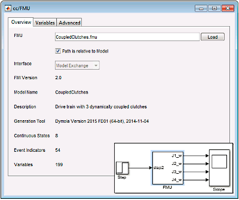
FMU export from Simulink
An updated version (2.1.1) of the Dassault Systèmes FMU Export from Simulink was released on June 24, 2015. The new package supports:
- Loading of binary MEX S-functions
- S-function blocks written in C++
- Simulink I/O buses with structured naming
- Black-box FMU generation
- Block hierarchy in variable names
FMU import to Simulink
Dymola introduces FMI Kit for Simulink, which allows you to import and embed FMUs into your Simulink models. It supports co-simulation and model exchange (FMI 1.0 & 2.0) and works with both 32-bit and 64-bit Matlab. Supported Matlab releases are R2010a to R2015a.
Import of Dymola source code FMUs is supported if exported with Dymola 2015 FD01 or later. Import of source code FMUs enables the use of the simulation targets Rapid Accelerator, RSIM, GRT, and dSPACE DS1005 and DS1006.
This article is provided by Dag Brück (Dassault Systèmes AB, Lund)
Dassault Systèmes acquires Modelon GmbH
On April 23, 2015, Dassault Systèmes announced its acquisition of Modelon GmbH in Munich, Germany, expert in “ready-to-experience” content for systems modeling and simulation which are strategic to transform the transportation and mobility industry. With this transaction, Dassault Systèmes reinforces its portfolio of industry-leading content, applications and services used in today’s age of experience. The new acquisition has beed named 3DS GmbH. Existing partnerships with Modelon AB, Sweden, continue unchanged.
“Since 2009, our industry-proven content implements the latest advances in Modelica tools and standards and, as a result, has enabled major industry milestones,” said Johannes Gerl, CEO, Modelon GmbH. “As part of Dassault Systèmes, we can expand the reach and impact of our assets to inspire electrified and ecologic product development that will be emblematic of the bright future of experience-based systems engineering.”
“We welcome Modelon GmbH’s team of experts and its industry-proven solutions in our mission to demonstrate the transformative power of 3D universes,” said Bernard Charlès, President and CEO, Dassault Systèmes. “With our 3DEXPERIENCE platform and strong and growing ecosystem of content partners, we now look to replicate Modelon GmbH’s success in other industries such as aerospace, energy, process and utilities, and construction.”
This article is provided by Dag Brück (Dassault Systèmes AB, Lund)
TLK DaVE - New version 1.5.0 released
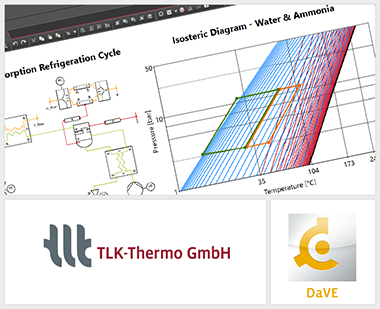
DaVE is TLK's software tool to visualize and analyze transient measurement and simulation data. Opening different data file formats like csv and Dymola result files, exporting i.a. to csv and pdf, simulating online with TISC, CAN, HiL or offline with FMUs and visualizing data by the use of different instruments like thermal state diagrams using our very fast substance properties TILMedia, REFPROP and others are all part of DaVE's basic functions.
The new version 1.5.0 contains many new features to make simulation and its post-processing a lot easier and more efficient. One of those improvements is the new isosteric diagram (log p 1/T). This diagram type enables the visualization of adsorption and absorption mixture processes with medium pairs such as Water-Ammonia, or Water-Zeolite.
The latest version 1.5.0 of DaVE contains the following improvements and features:
- New state chart types: Isosteres and pT
- Direct connection to NI LabVIEW and Vector CANape
- Improved support of Windows-based Tablet computers
- Many changes improving overall usability
For further information see www.viewer-suite.com, download the DaVE presentation or contact us at software@tlk-thermo.com
This article is provided by Matthias Kwak (TLK-Thermo GmbH)
Enhanced OpenModelica Interactive Notebook
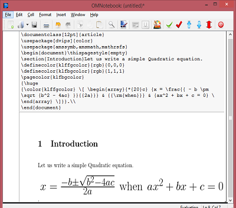
The OpenModelica interactive notebook, OMNotebook, primarily used for teaching and described here, has been enhanced in several ways:
- Support for moving cells from one place to another in a notebook.
- Easy evaluation of whole notebooks.
- A new cell type called Latex cells, supporting Latex formatted input that provides mathematical typesetting of formulae when evaluated.
For more information, see www.openmodelica.org .
This article is provided by Peter Fritzson (Linköping University)
LMS Imagine.Lab Amesim™ further extends its FMI support
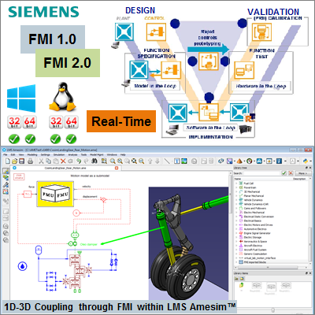
To serve the needs of its industrial customers, Siemens PLM Software promotes the deployment of the Functional Mockup Interface (FMI) as a reliable standard for exchanging models of dynamic systems. This is already reflected in the recently released version of its 1D system simulation flagship product, LMS Imagine.Lab Amesim™ 14.1.
While LMS Amesim as FMI 2.0 co-simulation master platform has already passed the official FMI Cross Checks in March 2015, with version 15, models will also be exportable as 2.0 slave Functional Mock-up Units (FMUs) for co-simulation. LMS Amesim 14.1 has the key competitive advantage to transparently manage causal or acausal modeling approaches. This is also the case with its FMI export capabilities that can be used with Modelica models or with its native models indifferently.
Siemens PLM Software currently works on many other exciting improvements that leverage the best of the FMI standard:
- Capability to generate real-time capable FMUs to be executed on FMI compliant targets.
- One-click generation of FMUs usable both on 32-bit and 64-bit platforms, no matter if under Linux or Windows.
- Automatic mechanism for embedding model tables, making FMUs usable anywhere, always with all the required model dependencies.
The Siemens PLM team is looking forward to discussing our products at the upcoming Modelica Conference in Versailles, France. We will be presenting the LMS Amesim Modelica platform and FMI tools during the vendor sessions. Participants will see the latest features available in LMS Imagine.Lab Amesim 14.1, as well as get an advanced preview of developments underway for LMS Imagine.Lab Amesim 15.
For more information about the LMS Amesim FMI capabilities, please visit the Siemens PLM Software website.
This article is provided by Bruno Loyer (Siemens PLM Software)
Modelon Deutschland at your service
Modelon is pleased to announce the establishment of Modelon Deutschland GmbH in Munich, Germany.
In April Modelon divested its minority-owned German branch. This announcement is a strong signal that we at Modelon continue to regard Germany as one of our most important territories, and we continue to serve our customers with local representation.
Modelon Deutschland GmbH is a fully-owned subsidiary of the Modelon parent company in Sweden, along with subsidiaries in the US and Japan. This step strengthens Modelon as a global and unified company with the mission of being the premier partner for Modelica and FMI-based solutions. As such, it is our goal to have a local presence in key regions worldwide.
As Modelon continues to grow and expand, our vision remains consistent: we give our customers a competitive advantage through model-based methods and tools for product development and optimal product operation. Our customers experience savings, a faster time to market, and efficiency gains by using Modelon’s fully standards based solutions portfolio for model based development. Our software portfolio remains at the core of our business and continues to strengthen through substantial R&D; efforts in collaboration with our customers.
We look forward to providing solutions to help our current and potential customers in Germany and worldwide to innovate and succeed.
This article is provided by Hubertus Tummescheit (Modelon) and Magnus Gäfvert (Modelon)
FMI Blockset extended to support additional tools
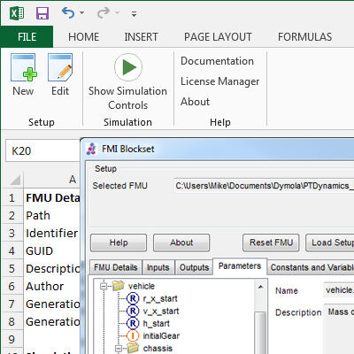
The FMI Blockset from Claytex was originally developed to support Simulink and has now been extended to work with Excel. In addition support for FMI 2.0 Model Exchange has been added.
Key features:
- Single license to use the FMI Blockset in Simulink or Excel
- Supports FMI 1.0 and 2.0 Co-Simulation
- Supports FMI 2.0 Model Exchange in Simulink
- Run multiple cases in Excel and store FMU details, parameter settings and results in 1 Excel file
For further information please see http://www.claytex.com/products/fmi-blockset/ or contact sales@claytex.com.
This article is provided by Mike Dempsey (Claytex Services Limited)
11th Modelica Conference - ITI will be front and center
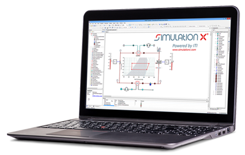
- Update on MSL and third-party library compatibility
Within the Vendor Session ITI presents the progress in making SimulationX compatible with every component and every example model in the Modelica Standard Library. Additionally ITI shares the current SimulationX results from the standardized Modelica test sets. - Continuous development process with CarMaker and SimulationX
ITI and IPG Automotive show in their poster presentation "Anticipatory Shifting – Optimization of a Transmission Control Unit for an Automatic Transmission through Advanced Driver Assistance Systems" and in a live demo at ITI’s booth at this year’s Modelica Conference how simulation models can be easily integrated in virtual test drives as part of the entire development process and how users benefit from this. - Using FMI in a cloud based web application for system simulation
As a second poster presentation ITI presents a generic approach to connect cloud computing and system simulation showing the benefit of using FMI to deploy self executing simulation units on multiple machines. Besides managing the calculation itself, ITI presents a web interface to upload, manage, modify and control simulation models, as well as analyzing results. - Energy-efficient design of a research greenhouse with Modelica
In cooperation with ITI, EA Systems presents a combined approach to model and simulate building operation and HVAC system behavior of a research greenhouse with Modelica including the presentation of some important modeling paradigms as well as system concept validation.
This article is provided by Manuela Joseph (ITI GmbH) and Thomas Beutlich (ITI GmbH)
XenGen: Web-Based Deployment of FMI Models

Xogeny is proud to announce that we will be demonstrating our latest tool, XenGen. XenGen is a tool that transforms FMI compliant models (FMUs) into web-based applications. Come see us on Monday, September 21st at 5:00pm in the "Colbert" room at the Modelica Conference.
One of the big advantages of XenGen is that it builds web-based applications based on information already contained in the FMUs. First, it leverages as much of the information already contained in an FMU as possible (min values, max values, defaults values, units, etc.). When additional information is required beyond what is normally provided by FMI, it leverages a simple and intuitive markup language to provide additional information and/or hints about how to display and manage data. In this way, model developers work with the tools they already know and no knowledge of HTML, Javascript or CSS is required to create these web applications.
With XenGen, model developers have a simple way to deploy and update their models. The main benefit of XenGen is that existing models can easily be transformed into web applications that can be used by many more users. By leveraging reactive design, these applications can be used on devices such as tablets and phones as well. This greatly expands the impact and reach of these models. This, in turn, means a much better return on the investment made in creating these models.
In addition to being a model deployment platform, XenGen is also a data management platform. It provides a complete data management solution for designs and simulation results. Furthermore, the underlying data management system is also a collaboration platform allowing users to exchange designs and results with each other as easily as sharing a simple hyperlink.
Xogeny will be demonstrating the XenGen application generator during the Xogeny vendor session. Please stop by and see XenGen in action.
This article is provided by Michael Tiller (Xogeny)